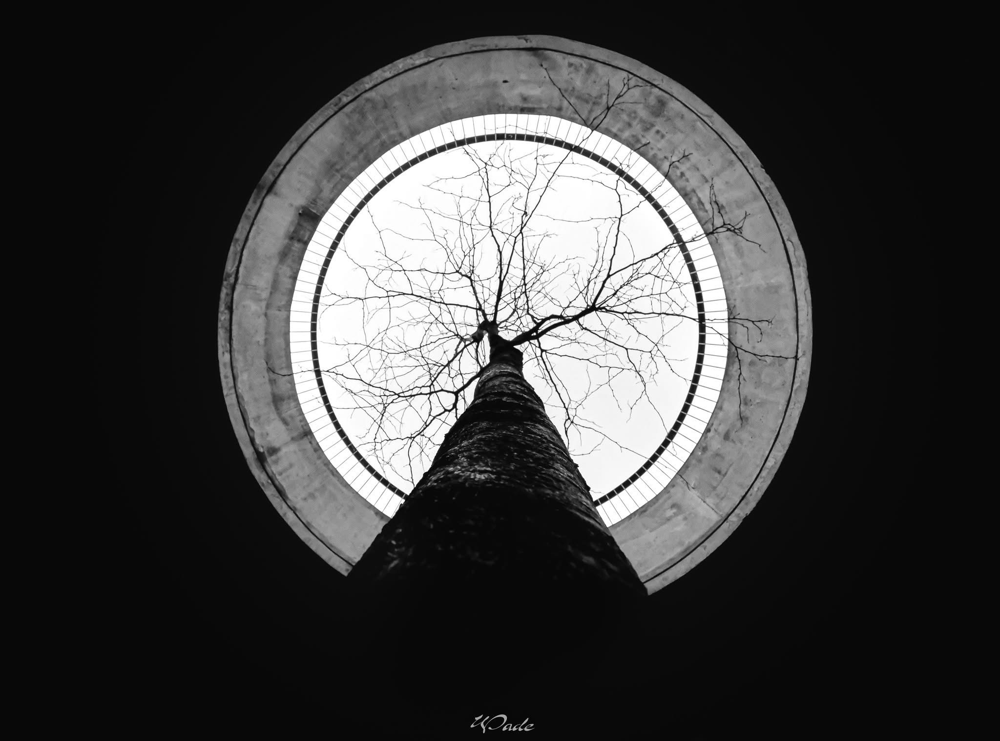
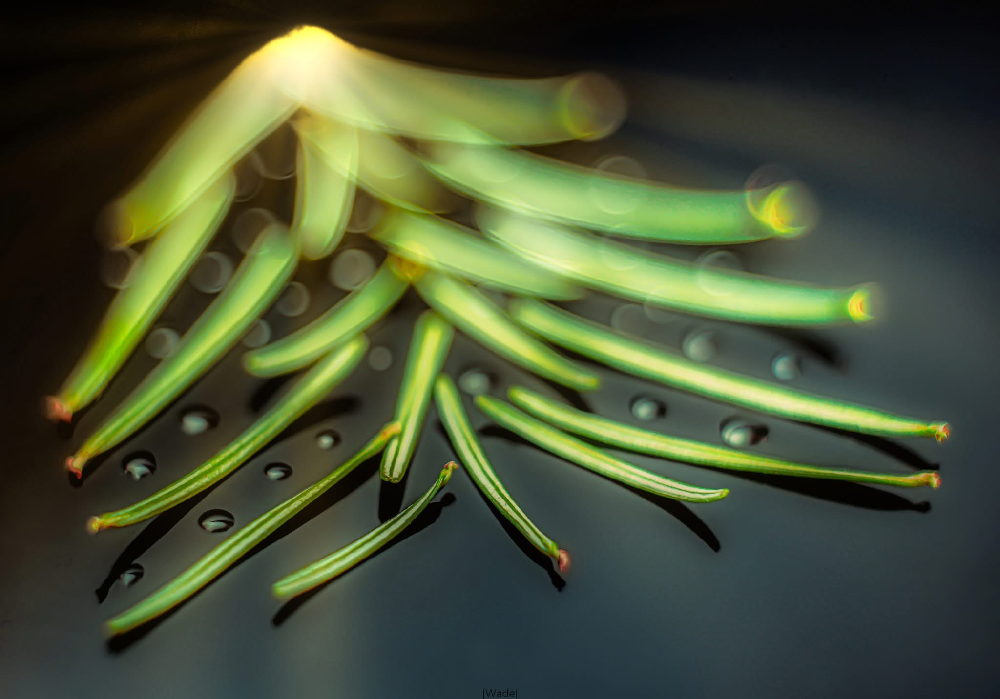

COMPUTER VISION / MASTER'S THESIS
Facial emotion & age recognition
Explored facial emotion and age recognition using R-CNN and ensembles of CNN models across FER2013 and IMDb celebrity face datasets.
001
HONG NGUYEN PORTFOLIO
I build, troubleshoot, and understand computer systems—from physical hardware and cameras to computer vision models, databases, and analytical tools.
Curious about how things work at every layer. My background combines Information Technology and Computer Vision with practical experience in data analysis, computer hardware, and technical problem-solving.
PC building, diagnostics, component-level curiosity, cameras, and practical troubleshooting.
Python, SQL, database design, data collection, analysis, visualization, and MongoDB.
OpenCV, CNNs, R-CNN, YOLO models, models experimentation, evaluation, and deployment formats.
COMPUTER VISION / MASTER'S THESIS
Explored facial emotion and age recognition using R-CNN and ensembles of CNN models across FER2013 and IMDb celebrity face datasets.
MACHINE LEARNING / DETECTION
Implemented and studied pedestrian detection with HOG, LBP, SVM, and sliding-window methods using the INRIA dataset.
HARDWARE / CAMERA EXPLORATION
Disassembled an old DSLR to understand the mirror, shutter, internal mechanical architecture, and components of a camera.
INDUSTRIAL COMPUTER VISION
Worked remotely on deep CNN and YOLOv2-based detection for vessels and cargo, including estimated dimensions for bridge clearance decisions.
DATA / SQL ENGINEERING
Built a simple database workflow to collect, analyse, and visualise customer and worker data for operational use.
PERSONAL HARDWARE
Built three personal PCs and diagnosed and repaired two systems for friends—hands-on practice with components, failure symptoms, and testing.
More project documentation and code on GitHub.
Collecting and packaging production goods while working with an internal shell-based system.
Database design, data collection, analysis, and visualisation using Python, SQL, Excel, and MongoDB.
Built an event restaurant website with Wix and analysed customer data from operational and Instagram API.
Computer Vision specialisation. Thesis: Facial Emotional Recognition by Applying R-CNN.
Specialisation programme.
Bachelor programme in Computer Science.
I am eager to learn more technical skills.
A selection of engineering builds, computer-vision experiments, and minimalist architecture photography.



06 / CONTACT
Interested in hardware, data engineering, computer vision, or practical technical problem-solving?
hongng234@gmail.com ↗